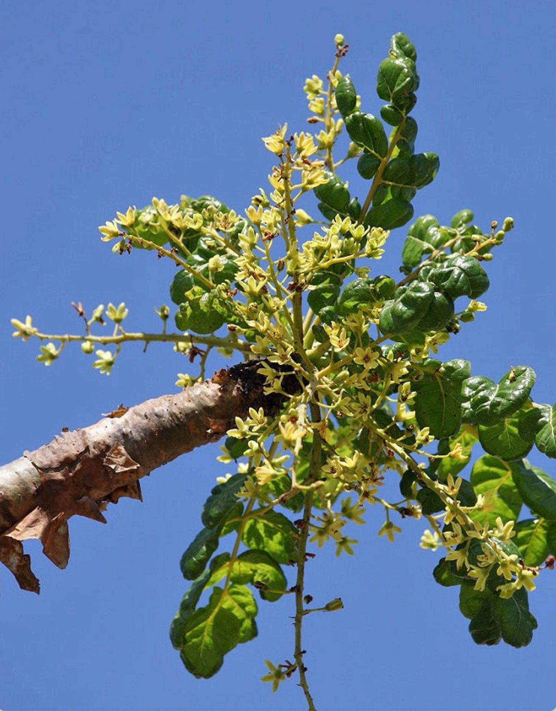

Latthe Education Society's Acharya Deshabhushan Ayurvedic Medical College And Hospital Bedkihal-Shamanewadi, 591214
Department of Dravyaguna Vigyana

Basonym of Drug
Shallaki
Main Synonym
Suvaha
Sara
Gajabhakshya
Surabhi
Sustrava
Bahustrava
Kunduruki
Vallaki
Mheruna
Regional Name
Bengali: Kundur, Laban
Gujarati: Saledo, Dhupado
Hindi: Salai, Salay
Kannada: Madi
Tamil: Paraginavani
Telugu: Paragisamvarani
English: Indian Olibanum Tree
Botanical Name
Boswellia serrata Roxb
Family
Burseraceae
External Morphology
A big tree
Useful Parts
Bark
Resin
Important Phytoconstituent
Beta-sitosterol
Boswellic Acid
Pentacyclic Acid
Diterpenes
Tetracyclic Triterpenes
Rasa Panchak
Rasa: Kashaya, Tikta, Madhur
Guna: Laghu, Ruksha
Virya: Shita
Vipaka: Katu
Action
Kaphapittashamak
Therapeutic Indication
Grahi (Stops Oversecretions)
Atisarhara (Anti-diarrheal)
Raktapittahara (Treat Bleeding Disorders)
Kusthaghna (Treat Skin Disorders)
Arshoghna (Anti-hemorrhoidal)
Nadivranapaha (For Abscess, and Sinus Tract)
Therapeutic Uses
Atisara:
Resin powder is useful with normal water in severe diarrhea.
Sandhishoola:
Resin is useful with hot water in arthritic pain.
Raktarsha:
Bark decoction is useful in bleeding piles.
Dose
Bark Decoction - 40-80 ml
Resin - 3 to 6 gm
Formulations
Jeerakadi Modaka
Adverse Effect
Not Known